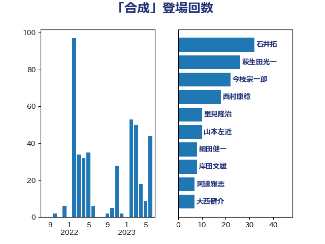

単語「合成」

| 石井拓 | 自由民主党 | 32 回 |
| 萩生田光一 | 自由民主党 | 26 回 |
| 今枝宗一郎 | 自由民主党 | 22 回 |
| 西村康稔 | 自由民主党 | 18 回 |
| 里見隆治 | 公明党 | 10 回 |
| 山本左近 | 自由民主党 | 10 回 |
| 細田健一 | 自由民主党 | 8 回 |
| 岸田文雄 | 自由民主党 | 8 回 |
| 阿達雅志 | 自由民主党 | 7 回 |
| 大西健介 | 立憲民主党 | 7 回 |
| 武村展英 | 自由民主党 | 6 回 |
| 若宮健嗣 | 自由民主党 | 5 回 |
| 石川昭政 | 自由民主党 | 5 回 |
| 川田龍平 | 立憲民主党 | 5 回 |
| 岩田和親 | 自由民主党 | 5 回 |
| 山本剛正 | 日本維新の会 | 5 回 |
| 太田房江 | 自由民主党 | 5 回 |
| 大野泰正 | 自由民主党 | 5 回 |
| 大岡敏孝 | 自由民主党 | 5 回 |
| 鈴木義弘 | 国民民主党 | 4 回 |
| 浜口誠 | 国民民主党 | 4 回 |
| 日下正喜 | 公明党 | 4 回 |
| 新妻秀規 | 公明党 | 4 回 |
| 長峯誠 | 自由民主党 | 3 回 |
| 落合貴之 | 立憲民主党 | 3 回 |
| 山口晋 | 自由民主党 | 3 回 |
| 中谷真一 | 自由民主党 | 3 回 |
| 西村明宏 | 自由民主党 | 2 回 |
| 石原宏高 | 自由民主党 | 2 回 |
| 河野義博 | 公明党 | 2 回 |
| 杉久武 | 公明党 | 2 回 |
| 川崎ひでと | 自由民主党 | 2 回 |
| 山田勝彦 | 立憲民主党 | 2 回 |
| 吉田とも代 | 日本維新の会 | 2 回 |
| 高市早苗 | 自由民主党 | 1 回 |
| 須藤元気 | 無所属 | 1 回 |
| 青柳仁士 | 日本維新の会 | 1 回 |
| 青山繁晴 | 自由民主党 | 1 回 |
| 青山大人 | 立憲民主党 | 1 回 |
| 階猛 | 立憲民主党 | 1 回 |
| 野間健 | 立憲民主党 | 1 回 |
| 葉梨康弘 | 自由民主党 | 1 回 |
| 舟山康江 | 国民民主党 | 1 回 |
| 穂坂泰 | 自由民主党 | 1 回 |
| 福島みずほ | 社会民主党 | 1 回 |
| 神谷政幸 | 自由民主党 | 1 回 |
| 礒崎哲史 | 国民民主党 | 1 回 |
| 田島麻衣子 | 立憲民主党 | 1 回 |
| 田名部匡代 | 立憲民主党 | 1 回 |
| 猪瀬直樹 | 日本維新の会 | 1 回 |
| 片山さつき | 自由民主党 | 1 回 |
| 浜田靖一 | 自由民主党 | 1 回 |
| 森屋隆 | 立憲民主党 | 1 回 |
| 梅谷守 | 立憲民主党 | 1 回 |
| 村田享子 | 立憲民主党 | 1 回 |
| 平将明 | 自由民主党 | 1 回 |
| 岩渕友 | 日本共産党 | 1 回 |
| 岡田直樹 | 自由民主党 | 1 回 |
| 山崎誠 | 立憲民主党 | 1 回 |
| 山岡達丸 | 立憲民主党 | 1 回 |
| 小森卓郎 | 自由民主党 | 1 回 |
| 宮本徹 | 日本共産党 | 1 回 |
| 大塚耕平 | 国民民主党 | 1 回 |
| 北神圭朗 | 無所属 | 1 回 |
| 八木哲也 | 自由民主党 | 1 回 |
| 伊東信久 | 日本維新の会 | 1 回 |